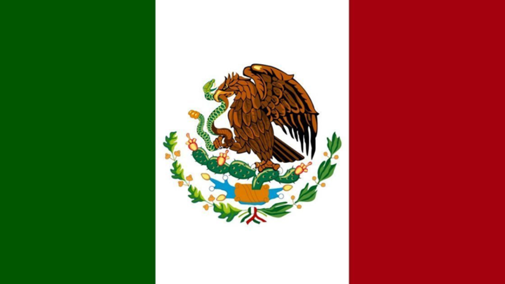

México
La Ciudad de México es la capital de la República Mexicana. Anterioremente se conocia como Distrito Federal. Es la ciudad con más población, con un área metropolitana que sobrepasa los 21 millones de habitantes.
Se establece sobre un asentamiento mexica, lo nombraron México Tenochtitlan. En 1535 se creó oficialmente el Virreinato de la Nueva España.